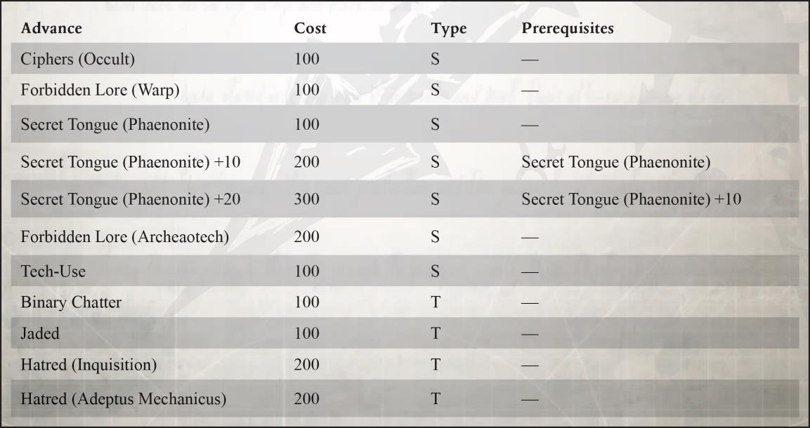
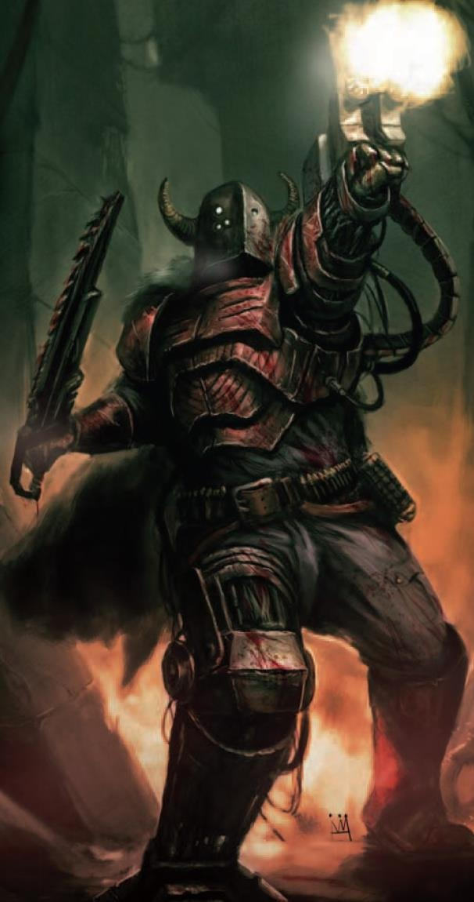
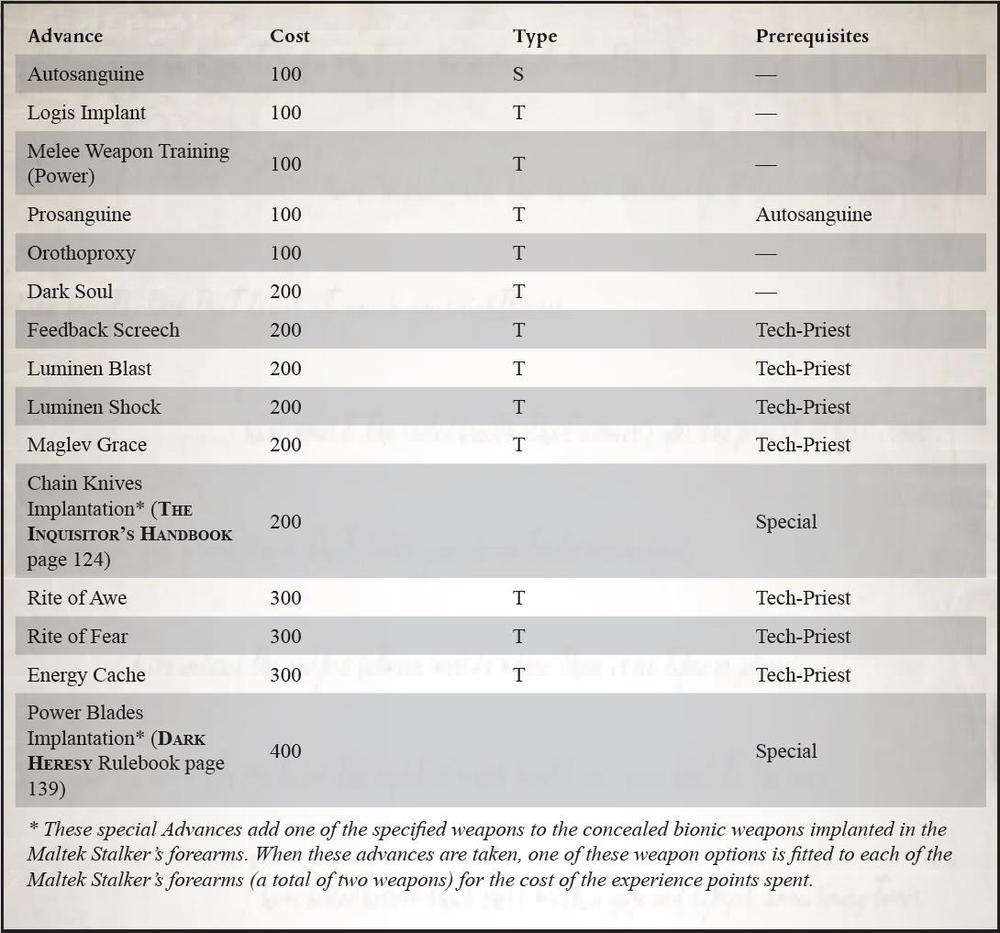

黑暗机械教的阴影
机械神教最痛恨的是在荷鲁斯大叛乱期间自己同胞中的背叛势力，这些叛徒至今仍然作为黑暗机械教派存在。那些可怕日子的禁忌历史表明，叛徒在火星和其他十几个战争领域造成的破坏是无与伦比的，留下了一个在所有欧姆尼塞娅神职人员灵魂上的污点，这个污点从未被洗净过。在战帅崩溃之后，许多幸存下来的黑暗机械教成员在各种叛徒军团中找到了庇护所，并在帝国的黑暗角落里生存下来，他们的可怕技艺蓬勃发展，对帝国的不朽仇恨在千年间一直在发酵。“帝皇之子” 的禁忌灵能声波武器，可憎的法比乌斯·拜尔的基因暴行，以及用于打造可怕的“泯灭者”的邪恶变态技术——都被归咎于黑暗机械教的门下。恐惧之眼深处的技术恶魔领主所统治的地狱铸造世界不断制造出武器和弹药，为混沌势力提供武器，为可怕的黑色远征火上浇油。
费农派一直眼馋着黑暗机械教，渴望其古老而扭曲的设计为他们自己所用。他们还认为黑暗技术贤者本身是技术神甫内在弱点的教训，无论其为谁或为什么服务。费农派认为他们不过是被迷惑和奴役的混沌棋子，比机器崇拜的偏狭帝国同行好不了多少。在费农派看来，黑暗机械教和叛变阿斯塔特军团都是小肚鸡肠的蠢货，他们挥霍了手中的权力，现在却在混沌之神的笑声中翩翩起舞，混沌之神给了他们想要的一切，直到让他们窒息。
当前的阴谋
"如果一个人一生都在行善积德、造福他人，那么他死后将无人称颂、无人铭记。如果他发挥自己的聪明才智，给数十亿人带来痛苦和死亡，那他的名字将在千百年中回响百世。比起遭受耻辱，声名狼藉永远更为可取。"
- 法比乌斯·拜尔在坎祖斯九号的亵渎仪式上
费农派目前的目标有三个：潜入、扩张和收购，所有这些都旨在最终恢复他们倒台前的力量，最终超越它。从他们所剩无几的残余中，他们早就计划将他们的激进主义传播到卡利西斯审判庭，并从内部颠覆它，直到有一天阴影可以吞噬实质——对曾经几乎摧毁他们的力量的恰当复仇。
两千年前，由于审判庭的净化，费农派几乎灭绝，剩下的少数费农派四散而逃且大大减少，但对于卡利西斯密会来说，相信费农派被有效地摧毁、其残余势力无能为力是一个致命的错误。被赶出他们的堡垒后，幸存者们逃离了那里，带着可怕的武器和来自破碎的费农首星的禁忌知识，有些人躲在遥远星区的匿名深处，而其他人则进入了光晕星边缘的无限虚空，以在帝国不干涉的情况下追求他们的噩梦科学。并不是他们所有的特工都被完全根除和清洗。相反，他们沉入了秘密的黑暗之中，等待着。这些特工慢慢地结下了他们的蛛网。因此，费农派沉睡的毒瘤阴谋依旧在卡利西斯政治体制的骨髓深处深睡着，随着星区的发展和历史的进程，费农派几乎成为了一种审判庭神话。他们的过失被从记录中删除，他们的罪行在卡利西斯密会中被几个世纪以来一连串更直接的威胁和阴谋所取代。事情就这样过去了，直到一些事件的发生预示着这个畸形派系的回归。
70 / 105
邪恶呼唤邪恶
古老的费农派的特工从外部黑暗中回到了卡利西斯星区，这要归功于一个人的行动：叛变机械教探索者大贤者昂波拉·玛琉格利斯，他最近的叛乱已经使卡利西斯机械教内部陷入内战。昂波拉·玛琉格利斯是一个疯狂的天才，掌握着无法衡量的神秘技术，费农派希望与玛琉格利斯建立联盟，他们可能会为他提供避风港，以便继续他的工作。费农派特工很快重新与那些坚守古老信仰的人取得联系。费农派通过阴险的腐蚀和恶毒的武力与可能被收买的卡利西斯审判官结盟，对叛变的技术神甫展开了暗中搜查。尽管费农派特工与玛琉格利斯取得了联系，但玛琉格利斯被证明过于危险且不稳定，甚至连费农派特工也无法操控或控制，与黑暗大贤者的交往几乎导致了费农派特工的完全毁灭。事实上，这次行动部分暴露了费农派特工首次出现在卡利西斯审判庭的事实。
费农派污染的传播
尽管他们的主要任务失败了，费农派特工们仍然认为他们来到卡利西斯星区是明智的选择。他们发现这里充斥着腐化、阴谋和黑暗知识，其审判庭动荡不安，充满了派系主义与不谐。这为费农派工们提供了许多隐藏在阴影中的机会，从而进一步追求权力，并扩大他们的影响力。很快，幸存的特工成员和他们的代理人开始追求埋藏在卡利西斯星区文明表面下的古老秘密。从那时以来的短短几年里，费农派特工们已经非常精于建立自己的权力基础，并拥有相当庞大的资源，尽管他们的规模相对较小，他们依然资助了几个小贵族家族和自由贸易船长，现在在商业和冷贸易行会中都有高层特工。他们还证明自己能够应对当地邪教、其他传播地更精巧的阴谋以及对手的反对，大多数情况下，他们既能依靠自己的黑暗力量，也能在需要时借用审判庭的权威。
伊杜米亚渗透
费农派对卡利西斯星区的统治产生的最大影响是对小铸造世界伊杜米亚上机械神教的渗透。伊杜米亚的铸造大师们长期以来一直处于不利地位，因为他们地处哈泽洛斯深渊的边缘，缺乏战略重要性，几个世纪以来，他们一直认为自己受到了拉斯星系中央当局的排挤和迫害，费农派很快就利用了这种不满情绪。伊杜米亚的上层部分已经被费农派阴谋所深陷，被禁忌知识的提供、有针对性的谋杀以及破坏计划所腐化。铸造世界本身现在设有许多为费农派提供支持的秘密设施，并为该派系提供持续的劳动力、实验对象和隐藏的港口。
费农派对伊杜米亚的渗透以及其在附近星球的活动已经给费农派带来了一个未预料到的问题——永恒财团。这个财团是一个由长距离经商者和走私者组成的佣兵联盟，活动在哈泽洛斯深渊的深处。起初，它似乎是费农派特工的完美目标。然而，当他们对该组织采取行动时，很快就显而易见，他们犯了一个严重的错误。这个同盟已经被另一个更黑暗的力量的傀儡所利用，几乎轻而易举地击败并摧毁了费农派特工。费农派就此认为，与其与一个本质和程度不完全了解的权力进行战争，不如在尽量避开的情况下，直到他们找到更多的信息为止。这一逆转使他们陷入了一个困难的境地，因此现在他们必须绷紧绳索，使其他更合法的审判庭介入一个明显对他们和星区本身都构成威胁的威胁，并在此过程中不暴露自己的真正本性。不管怎样，费农派骄傲的阴谋和力量受到了直接挑战，他们将不惜一切代价看到永恒财团及其神秘的支持者被摧毁。永恒财团并不是唯一一个在帝国边界之外的黑暗星群中有着未知主
71 / 105
使的团体，如果需要的话，它们也可以被召唤……
种族灭绝祭坛
自费农派进入该星区以来，某些卡利西斯费农派一直沉迷于一种被一些消息源称为“种族灭绝祭坛”的黑暗知识碎片。根据疯狂的大贤者昂波拉·玛琉格利斯留下的神秘技术碎片反复提及的内容，这个“祭坛”据说是一个隐藏的金库，包含了玛琉格利斯所有黑暗造物的主模板，以及他作为探索者在帝国之光之外的漫长职业生涯中收回或夺取的可怕文物。这个神话让费农派与其他寻求梦魇宝藏的人发生了明争暗斗，其中包括敌对的审判官、探索者，以及手上沾满鲜血的敌对技术异端教派：坐拥广泛扩张的实力与阴谋，逻辑学者的曾在其他地方与费农派作战，并很快认清了对手的真面目。自那以后，卡利西斯星区的逻辑学者准备计划揭露费农派特工的存在，希望审判庭为他们清除这个令人讨厌的对手，而费农派特工也在密会内部制定了同样的计划。
被遗忘的末日
在朦胧星域的边缘，有一个古老的神话，关于一场没有被记住的名字的古老战争，发生在帝国历史的深处。这场战争的惨烈程度无与伦比，可怕到所有关于它的记载都被从帝国记录中抹去，也许只有神圣审判庭最严密的档案、某些阿斯塔特战斗传奇的循环圣歌以及古代机械教的数据颂歌中才有一些零星的记载。这个神话，被许多黑暗知识的追求者所贬低和否认，却已经成为费农派许多人的迷恋之物。他们在那场战争留下的古老秘密中寻找至高无上的力量和他们自己欲望的升华。
异端囤积的零星故事碎片和其他末日资料讲述了一场巨大而可怕的冲突，有些说法是在第32 个千年中期爆发的，那是异端统治后，帝国陷入无政府状态的传奇时期。根据传说，某个地方的探险家深入到了卡利西斯的螺旋星域（尽管其他消息来源将其放置在可怕的曼德拉（Mandragora）地区，甚至遥远的忘恩边疆区（Unbeholden Reaches）），他们在那里遇到了一种奇怪的文物——一个巨大的迷宫般的装置，似乎由尘埃和磁力编织而成，他们将其称为“回响宝库”。
这个巨大而神秘的文物，也许是来自未知存在领域的大使，向毫无戒备的人类释放出前所未有的恐怖浪潮。这些无情蹂躏的异形（如果它们真的可以被称为异形的话）是一种令人憎恶的恐怖生物，在记录中只是被隐晦地称为 "蹂躏"。这些实体违反了已知的物理法则，仅仅靠近它们就足以被杀死或让无保护的头脑发狂。"蹂躏者"无情地蹂躏着他们经过的一切，没有任何力量能够抵挡它们。在短短几年间，上千个居住着人类和异形的星球都死在了他们的脚下，阿斯塔特修会和审判庭领导的部队也遭受了前所未有的损失，试图遏制他们却徒劳无功。
根据黑暗的技术异端偏爱的传说版本，神圣审判庭最终发现只有遗物技术和巫术传说的融合之物才能遏制住"蹂躏"，使帝国能够发动攻击，尽管使用这种造物的审判官面临着极大的风险。在遭受打击后，"蹂躏者"逃回到了死亡世界的遗址之上，回到了“回响宝库”，据说机械神教在那里使用了一种黑暗科技年代的禁忌武器摧毁了“蹂躏者”的桥头堡，并将他们越过的维度大门封印。
这场冲突及其影响是如此可怕，以至于后来，所有关于这场冲突的记录都被从帝国历史中抹去，其残留的痕迹也在随后的动荡岁月中消失殆尽。一些异端信徒指出，在那些早已被人遗忘的日子里，帝国的力量突然衰弱，东部边缘地带的广袤荒漠中出现了一些没有生命的世界，这些都证明了“回响宝库”的存在。大多数人（包括神圣审判庭中的许多人）都蔑视这一传说，
72 / 105
认为它要么是彻头彻尾的捏造、曲解，要么是为了掩盖其他更黑暗的真相而编造的谎言。然而，近些年来，卡利西斯暴君阴谋团中的一些人将这个早已被诋毁的传说与暴君星科莫斯现象相提并论，而另一些人则倾向于对这个神话做出不同的解释：对混沌入侵、短暂的亚空间裂隙甚至是某个早已被遗忘的泰伦虫族先驱蜂巢的混淆误读。少数知道这个故事的人怀疑，在远离欧几里得现实空间和亚空间的浩瀚无边至高天内，“蹂躏者”是否还在耐心地等待着他们归来的时刻。
费农派与其他审判庭派系
费农派蔑视审判庭的其他成员，因为只有那些被迫害和追杀得失去理智的人才会这样做。在其他派别中，无论是激进派还是其他派别，他们都特别憎恨赞斯派。这群人既催生了费农派这一分裂的学说，又在过去的谴责和毁灭中名列前茅。费农派也憎恨托尔派，对他们来说，托尔派是帝国最大失败的化身。费农派也对再团结派非常不屑，他们认为再团结派抱有一种天真和软弱的态度，淡化了自己的立场。如果费农派要与神圣审判庭的其他激进派找到共同的事业，那也许会是伊斯塔万派，因为他们的目标是通过冲突和使用一切必要手段来加强帝国，这与费农派自己的做法不谋而合。最近，费农派获得了有关所罗门沉睡者这个 "邪教 "的情报，以及该邪教可能与伊斯塔万派这一极端派别的联系。虽然他们还没有取得任何具体的联系，但如果情报属实，费农派或许对其动机和方法非常感兴趣。
对于卡利西斯密会的其他派别及其高层来说，费农派的存在与其说是事实，不如说是谣言。除了在与玛琉格利斯的追随者交战时暴露了身份之外，他们一直在竭尽全力保守秘密，确保自身的安全。
事实上，有几位审判官在过去曾遇到过他们，但却无法确定他们的性质。不止一位审判官对费农派的真实身份持有明确的怀疑。然而，随着费农派的势力和人数不断增加，他们被发现的机会也越来越大。如果他们的存在在这个星区被证实，由于他们被逐出修会的身份和传说中的恐怖，他们可能会遭到整个卡利西斯的密会的反对和审讯。特别是，费农派将会成为众多杰出的赞斯派、猎巫人不遗余力追捕的猎物，尤其是献祭派如果知道费农派的存在，他们更会不惜一切代价消灭他们。
所罗门之事
所罗门的地下暗藏着一个阴谋网，千余年来，人们一直在拒绝将其从根部挖出来的尝试。沉睡者—他们更广为人知的名称--长期生活在当地的传说中，作为所罗门夜晚恐怖的代言人，他们的存在已经成为这个枯萎的巢都世界恐惧景观的一部分，是一个吓唬孩子的故事，既令人不安又非常真实。可以确定的是，该邪教（如果它真的是邪教的话）阻挡了所有追踪其来源的尝试，而当地政府基本上已经放弃了除了遏制它之外的任何努力。然而，审判庭意识到这样一个事实：这种看似自满的态度掩盖了所罗门统治精英们对沉睡者的真正恐惧，而过去寻找他们的失败行动的证据早已被压制。在对受害者的选择上，沉睡者似乎只绑架社会边缘人和那些误入歧途之人，进一步提高了他们的神话地位。该邪教的绑架者，在当地俚语中被称为 "砻糠"，因为他们脸色苍白，营养不良，只是活者的人形机械。当他们被抓住或杀死时，他们也完全保持沉默，无法追踪，无法审讯，对最强烈的精神探测也完全空白，更无法得知他们的来历。谁是真正的沉睡者世代以来都是值得关注的问题，但从来没有能够发现过有用的东西，尽管有几个审讯官在试图这样做时失踪了。一种持续存在的理论认为，沉睡者
73 / 105
实际上是审判庭内部的一个高度秘密的激进派；有些故事声称是伊斯塔万派。他们的目标，据说是在人类的头脑中创造一个宇宙的恐怖无法再触及的状态，而他们在恐惧和疯狂方面的实验已经持续了一千多年，从未停止。
费农派的侍僧
大多数侍奉费农派主人的人根本不知道他们正在这样做。大多数此类审判官则都打着独立经营者的幌子，或对某个主要修会提供口头上服务，以更好地掩盖他们的真实效忠对象或监视更广泛的卡利西斯密会。还有一些声称正在进行特殊保密操作，并将整个行动隐藏在卡利西斯密会之外。最后这群人实际上是真正的叛徒，费农派要么被认为已经死亡，要么因犯罪而躲避教会当局的追捕。他们的安全依赖于距离和隐蔽。侍僧（对其首领的可怕秘密一无所知）为这种主子服务的生活确实很残酷。他们被视为完全可有可无的工具，只能按照审判官的意愿使用。
因此，费农派在一定程度上需要来自各个背景和信仰的侍僧，唯独不会让战斗修女为他们服务，并且只对信仰不够真诚的牧师感兴趣。然而，他们最喜欢的特工是各种各样的杀手。前卫兵和精于谋杀的流氓分别因其蛮力和道德底线灵活性而被选择，而背离机械教教义的技术神甫则被认为是费农派“伟大工程”的潜在资产，因此特别有价值。
在为费农派审判官的服务中，最有天赋、最有前途或者只是最冷酷无情的侍僧会发现他们受到了特殊关注，以便将他们带入真正信徒的行列，不论是通过信仰、操控，或者（如果有必要的话）精神重构。这些被选择的侍僧随后都会被刻上了一种带有亚空间魔力的电子纹身，标志着他们是自己主人的资产，无论是身体还是灵魂。其他可能会随之而来则是更多被黑暗污染的科技植入设备和其他“改进”。
精英转职：费农派印记
"……如你们所见，亚空间变种人的再生能力使我们能够进行活体解剖，以探索我们能在多大程度上成功地将生物机械进食管植入神经组织，而正常人会很快休克死亡。当然，我不得不切断并完全烧灼声带，因为我发现不停的尖叫声会让人分心……"
-费农派机械教贤者巴拉巴对他的学生们说
费农派是审判庭中最黑暗、最邪恶的激进派别之一，他们痴迷于利用亚空间的力量，并通过使用扭曲且长期被禁止的技术来机器亚空间之力并控制恶魔。该派系因犯下诸多罪行，并因从神皇崇拜者转为追求权力的自大狂而被宣布为叛徒并逐出修会，遭到残酷镇压和清洗，但并未被摧毁。费农派虽然人数不多，但在卡利西斯星区的势力和影响却在不断扩大。
部分由于他们的非法身份和费农派秘密审判官的极端偏执，在他们最信任的侍僧圈子里打上自己的印记已成为该派别的惯例。这种标记的形状是在受试者的肉体上烙下一系列痛苦的电子纹身，一旦植入，就会隐形，直到受试者有意识地触发。构成电子纹身图案的神秘几何图形、守护符文和邪恶亚空间符文对每个被标记的侍僧来说都是独一无二的，既是一种安全的身份识别手段，让费农派可以互相认识，也是审判官对其追随者实施控制的一种隐蔽手段。印记的存在也表明一个人已经融入了这个被逐出修会的邪恶派别的核心，并开始了解其秘密，而且为了获得印记，他很可能已经做了很多可怕的事，也见过很多可怕的事。
74 / 105

限制条件：该角色必须宣誓效忠授予他印记的费农派审判官，如果此事暴露给更广泛的审判庭，他将被处以死刑。只有成为费农派审判官亲信仆人的侍僧才能获得此精英进阶。
进阶费用： 350 xp.
效果
费农派印记的效果如下：
75 / 105

费农派转职：技术弊病追猎者
“为我尖啸……”
——沙内尔·布莱克·欧米伽，费农派之手
技术弊病追猎者作为审判庭中被视为非法的费农派选定的专属杀手和受宠密探，成为了灌输
76 / 105
了杀戮技艺、亵渎技术和亚空间力量的活体刀刃。这些综合了上述特质的黑暗武器宛如噩梦般的阴影，他们只为费农派的理想服务，在该派别的敌人中播下恐怖和死亡之种，其邪恶的本质体现了费农派教义的恐怖和恶意。
技术弊病追猎者是被开发而非制造出来的。首先，费农派会从他们久经考验的从者队伍中挑选出一个训练有素、能力高超的杀手，这个候选人还必须具有相当大的精神和身体毅力，才有机会在这个过程中存活下来，而费农派早已知道，一个已经感受过混沌之力的身体和灵魂有可能产生最好的结果。然后，候选人会被派系中的黑暗贤者和技术异端带走，接受一系列噩梦般的神秘仪式和一系列折磨身心的生体改造和仿生器官植入。并非所有被选中的人都能在技术异端的关注下存活下来，但他们的身心都已经被彻底地改造，杀戮能力也得到了极大的增强，并拥有了一种恶魔般的屠宰嗜好。
追猎者的生化植入物是对致力于机械神教的祭司扭曲的嘲弄，由亚空间的邪恶能量协调和驱动的它使追猎者的身躯充满了非自然的活力。这些装置看起来更像是肉体而非金属，多亏了贯穿它们的恶性力量，使得它们能在受损时可以自动愈合，让受到攻击的持有者只是留下了一道疤痕或几滴冒着蒸汽的鲜血，甚至可能随着时间的推移不断 "进化"，以更好地反映内在的黑暗灵魂。然而，追猎者的技术弊病植入物最强大且可怕的效果是允许刺客以被掠夺的生命力为食，加强自己的力量，最终获得一种非自然的谋杀饥渴，甚至连费农派也难以对其进行控制。
成为技术弊病追猎者
在角色获得这个转职的时候，刺客获得机械植入(Mechanicus Implants)特性（见《黑暗异端》核心规则手册第 27 页）和新的天赋技术弊病次元线圈。 为了这些植入物和任何进一步的进展，追猎者被假定满足任何指定为 "技术神甫 "的前置条件，还自动获得了两件优秀水平的隐蔽仿生武器（见《审判官手册》第 138 页）。这些工具被安装在追猎者的手臂上，最初被归类为单分子刃刀。额外的武器选项可以作为技术弊病追猎者进阶计划的一部分，并以*号标记。当采取这些进阶时，这些选项会被自动添加为武器，可以部署在追猎者的隐蔽式前臂装备(concealed forearm rig)以及任何其他现有武器。成为技术弊病追猎者的过程极为痛苦，当采用这个生涯等级时，应该将角色从游戏中移除 1d5 个月的 "游戏内 "时间段。在这段时间内，角色的交际加值将永久损失 1d5，并获得 1d5 的失心点数和 2d5 的堕落点数，同时还将永久损失 1 个命运点数。
需要职业：刺客，T 35+，WP 35+，10+堕落点。
替代等级：等级 5 或更高（3000 经验值）。
其他要求：该角色必须已经获得了费农派印记（见上文及激进派手册第 72 页）精英进阶。
此外，嫉妒心极强的费农派不会容忍他们的仆从效忠于其他主子。如果一个刺客有任何其他想要继续的教派或信仰关系，他就不能选择这个替代职业，而且必须放弃任何与其有关的东西，失去该团体特有的任何特殊天赋或联系（例如与猎杀精英(Moritat)有关的收割天赋；见《审判官手册》第 75 页）。在成为追猎者之后，该角色以后不能再获得这种精英优势或
77 / 105

其他职业选择，也不能获得任何与信仰有关的天赋。
新天赋：技术弊病次元线圈
前置条件：技术神甫（储压线圈）
为技术弊病追猎者的植入物提供动力的储压线圈是古代技术和玄妙科学的黑暗融合体，上面刻有黑暗符文并充满了亚空间的能量。因此，追猎者的植入物可以像正常的肉体一样在受损时自行 "愈合"，缓慢地重新编织和修复自己（仍然不能被急救治愈，只能通过追猎者的自然愈合和天赋来治愈）。此外，每当技术弊病追猎者亲手杀死（也就是说给予致命一击）一个有生命的生物时，可以立即恢复 1D5-2（最小结果为 1）损失的生命值，直至达到该角色的起始生命数。由 "神圣 "武器造成的伤害不能以这种方式治疗。这种邪恶的再生也可以治疗致命伤害的效果，但不能用于恢复断肢。
当技术弊病追猎者的身体部位受到致命伤害时，投掷灵能现象表，并对结果-20。效果发生时将追猎者视为灵能者。
上文的作者为神圣审判庭秘教徒老师
原文地址: https://www.bilibili.com/read/cv18055959
78 / 105
审判官苏雷斯亚“被遗忘者”
作为一位经验丰富的恶魔猎人与恶魔庭武装学会（Scholariate at Arms）成员，审判官苏雷斯亚一直秉承着赞斯派的理念，并公开使用着一把名为凯雷兹·斐尔（Kherez'phyr）的恶魔武器。因此多达数十名的审判官，特别是纯净派审判官对他施行了控告，但没有一次得到正式执行，这主要归功于他的行动被证明是有益的，特别是清除广泛存在的阴谋与邪教问题上，甚至有好几次挫败了可能爆发的毁灭性恶魔入侵。同时根据武装学会的管理准则，就算理念相悖的同僚间也应该维系着脆弱的休战。苏雷斯亚的身边维持着一支短小精悍的团体，其中包括数十名放逐者（Banisher，牧师转职）、技术神甫以及枪炮机仆（Gun Servitors）。
苏雷斯亚很少会与其他审判官合作，就算情况特殊，合作也只会仅限于早期的情报收集阶段，所有任务的执行阶段都是有苏雷斯亚自己和部下完成的，除了他的仆役，没人见过有谁能高效的清除人类之敌。这一切的原因，是苏雷斯亚根本不是一名赞斯派的审判官，而是那个被划归为叛徒的费农派。之所以能伪装的如此成功，主要原因还是如今费农派已经非常少见，自从他们因为自己离经叛道的哲学被帝国列为非法组织后，人们都认为该派系已经被完全消灭，但是近期他们再度回归并开始在卡利西斯星区活动。
费农派的理念是对赞斯派“用混沌击败混沌”理念的极端化，以至于那些资深激进派审判官，都认为这些人做得太过界了。费农派相信亚空间之力可以与科技融为一体，创造出自己梦寐以求的终极武器。但他们与赞斯派最大的区别在于，所有那些追随上帝的人，无论对象是帝皇，还是毁灭之力，都是如假包换的傻瓜。他们蔑视所有对神灵的崇拜，认为自己才是银河中的终极力量。因为费农派对亚空间科技的专精，以及他们妄图超越神明的理念，机械教称呼他们“技术弊病（maletek）”。
苏雷斯亚一直在遵循着费农派的信条，利用着身边的仆役追寻着自己的目标。事实上，他经常携带的那把凯雷兹·斐尔，只是他异端行径中最轻的一项罢了，为的是吸引那些迂腐审判官的注意。在战斗中，苏雷斯亚使用着各种邪恶技术，包括注入亚空间之力的铠甲和种种阴间的战争机器。甚至他常带着的枪炮机仆，都是对机械教产品的异端仿制品，其背后是各种恶魔召唤仪式与禁忌技术。而苏雷斯亚的部下中，也很少有人知道他真正效忠的是谁，至于审判官同僚也仅仅认为他最重的罪行是遵从赞斯派理念，根本不知道他面具之下有着何种罪无可赦的异端罪行，他自己的一举一动都不过是编织谎言之网的丝线而已。
在整个卡利西斯星区中，能真正指控苏雷斯亚的人只有甘库斯·达尔（Ghankus Dhar），武装学会的监管者。达尔是否知道苏雷斯亚的真面目尚不可知，但只要继续以伪赞斯派的身份消灭人类之敌，这个问题的答案就永远不会浮出水面。
以上的苏雷斯亚审判官的译者是一条关白老师，本文对一些名词进行了改动，以便前后文通顺。
原文链接：以夷制夷：薛利亚“放逐者” - 哔哩哔哩 (bilibili.com)
79 / 105